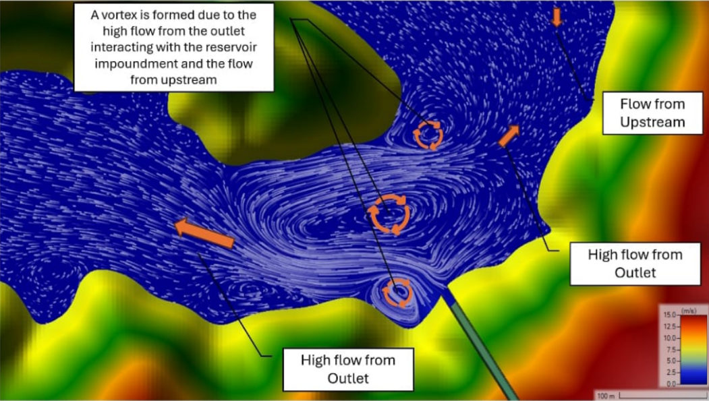
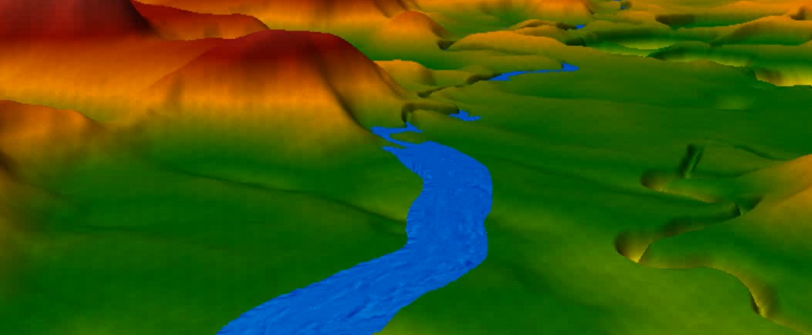
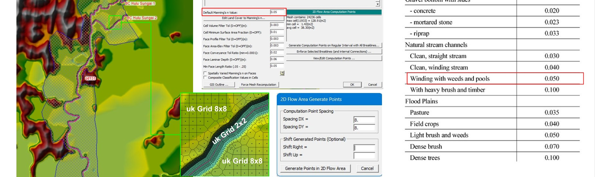
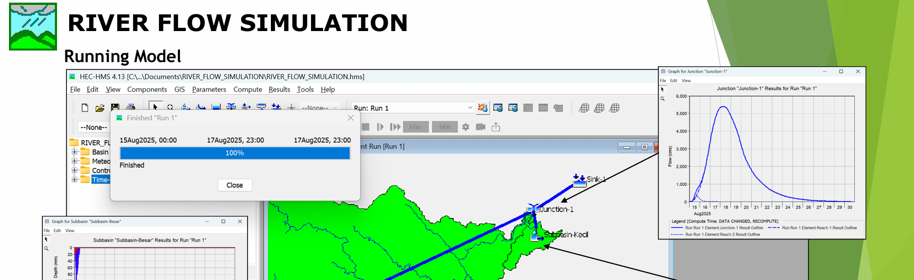

Rahim Mustaqim, MSc (Eng.)
✔ Clear communication • Research-based approach • Practical engineering judgement
I provide engineering consulting services to analyse and solve complex water-related challenges. My work covers river basins, flood-prone areas, and coastal zones with a strong focus on numerical modelling, data-driven analysis, and practical engineering solutions.Mustaqim, R., Widyaningtias., Bumi, I.S., Suryadi, Y., Nugroho, E.O., Kardhana, H., Adityawan, M.N. (2022): Hydrodynamics Analysis in Bedono Beach Demak Regency, Central Java Indonesia : Open Resource Processing for Modeling. Jurnal Teknik Sipil ITB, Vol. 29 No. 3 DOI: 10.5614/jts.2022.29.3.3
Integrated hydrology, hydraulic, hydrodynamic, and sediment modelling for the Pakil Pumped Storage Plant–Laguna de Bay system using HEC-HMS, HEC-RAS, and Delft3D FM.
 ▶ Project Overview (under development)Numerical flood modelling and engineering analysis of river systems and alternative diversion channel designs using HEC-HMS & HEC-RAS
 ▶ Eksisting River Simulation (HEC-RAS 1D) ▶ Diversion River Simulation (HEC-RAS 1D)Numerical flood modelling and engineering analysis of river systems and and development of riverbank channel designs for capacity enhancement using HEC-HMS & HEC-RAS
 ▶ Eksisting River Simulation (HEC-RAS 2D)Numerical flood modelling and engineering analysis of hospital drainage systems and alternative drainage channel designs using HEC-HMS & HEC-RAS
 ▶ Training SessionThese guidelines provide a comprehensive framework for sustainable water supply management under the authority of Perum Jasa Tirta II, ensuring the reliable, efficient, and environmentally responsible utilization of water resources.
Ready-to-use engineering resources developed from real projects and academic research. Instant access after confirmation.
Comprehensive digital training on rainfall–runoff modelling and flood simulation using HEC-HMS, designed for engineers and graduate students.
Please provide a brief overview of your project or research needs. I typically respond within 24 hours on working days.